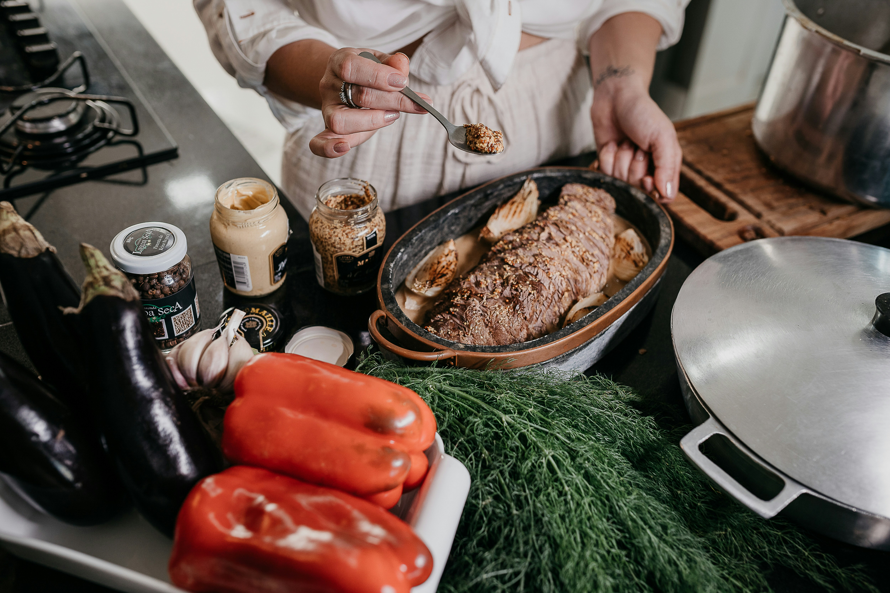

Un blog dedicado a compartir recetas fáciles, deliciosas y perfectas para cualquier ocasión.
Me apasiona la cocina y disfruto experimentando con nuevas recetas. En este espacio comparto algunas de mis favoritas, explicadas paso a paso para que cualquier persona pueda prepararlas en casa.